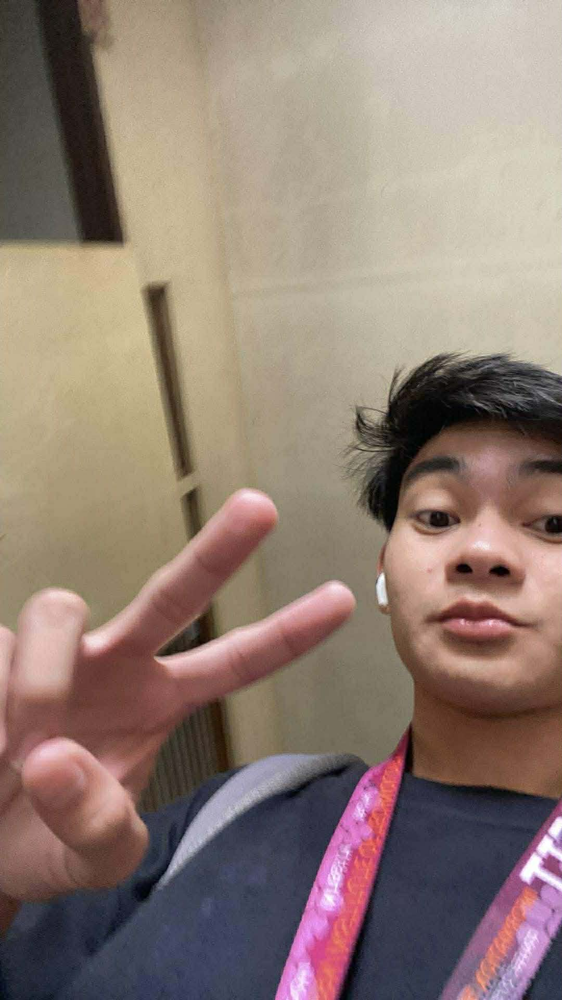
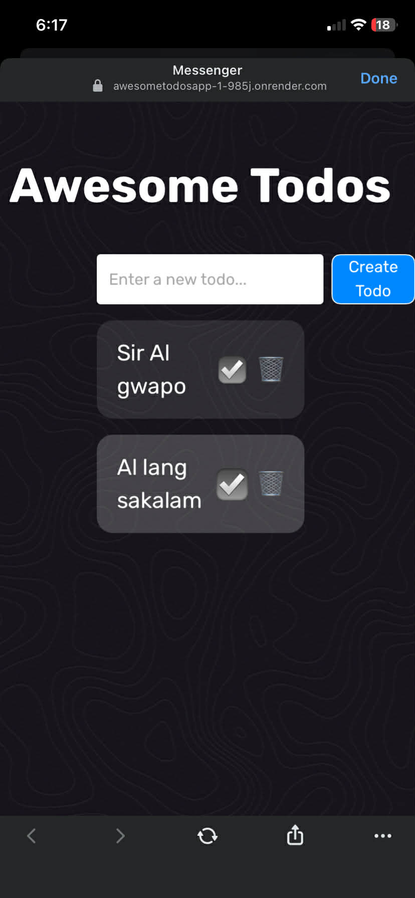

I am Glen Relan M. Barretto, a BSIT student from Western Institute of Technology creating front-end work with strong visual rhythm, modern styling, and a sharper personality than the usual student template.

Creative Focus
UI design, web layouts, and visual polishStyle
Clean, bold, and quietly arrogantAbout Me
I build with taste, not just code.
I'm Glen Relan M. Barretto, a passionate second-year BSIT student at Western Institute of Technology. I enjoy shaping simple ideas into cleaner, stronger, and more attractive web experiences.
My goal is to keep improving my eye for layout, typography, spacing, and user flow so every project feels intentional instead of ordinary.
Selected Work
Projects that show my design direction

Project Type
Website design concept
Main Goal
Clean layout and better visual flow
Featured Project
Awesome Todos
A stylish to-do app concept built to make task management feel clean, focused, and surprisingly premium from the first glance.
Back to topBrand Website
Creative Studio Landing Page
A landing page concept with stronger visual pacing, bold type, and a more premium structure for presenting a creative brand.
UI Design
Modern Web Interface Concept
A sleek interface study built around contrast, layered cards, and a cleaner content system for a modern web experience.
Responsive Design
Mobile-to-Desktop Layout Study
A responsive design exercise focused on keeping the same confidence and clarity across phone, tablet, and desktop screens.
Contact
Email: glenrelanbarretto01@email.com
Based in: Sara, Iloilo